Futebol que Une o Brasil
Conheça o novo projeto da CBF para incentivar a prática do futebol em todo o país.
A Confederação Brasileira de Futebol (CBF) apresenta o projeto Futebol para Todos, uma iniciativa criada para incentivar a prática esportiva, promover a inclusão social e fortalecer o desenvolvimento do futebol em diferentes regiões do Brasil.
Por meio de ações voltadas para crianças, jovens e adultos, o projeto busca ampliar o acesso ao esporte, apoiar a formação de novos talentos e incentivar valores como respeito, trabalho em equipe, disciplina e cidadania.
Neste site você poderá conhecer mais sobre o projeto, acompanhar notícias, descobrir informações sobre as Seleções Brasileiras e entrar em contato para saber mais sobre as iniciativas promovidas pela CBF.
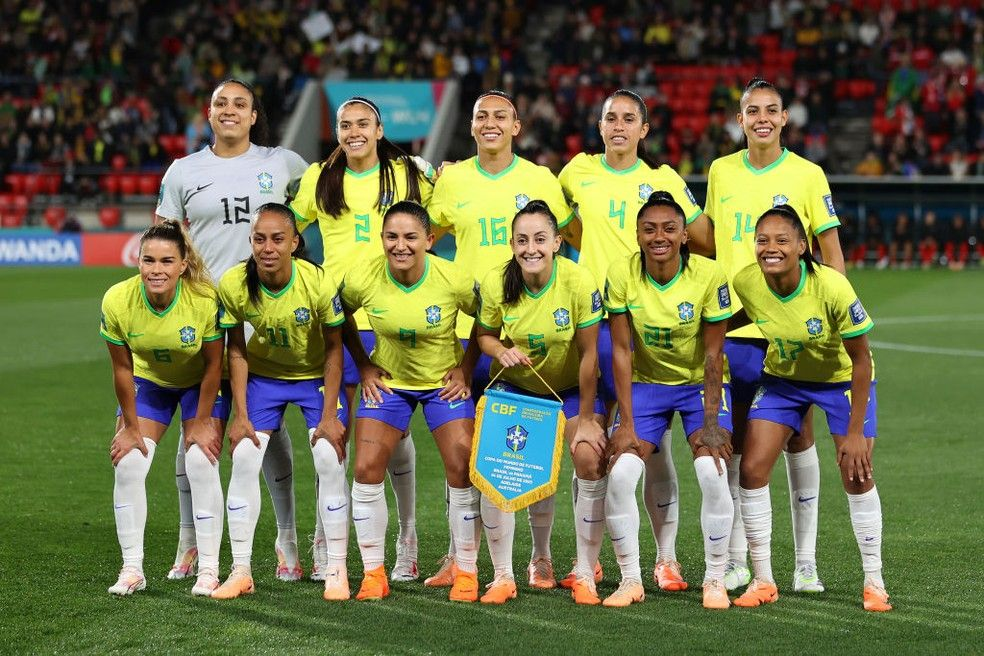
Futebol Feminino
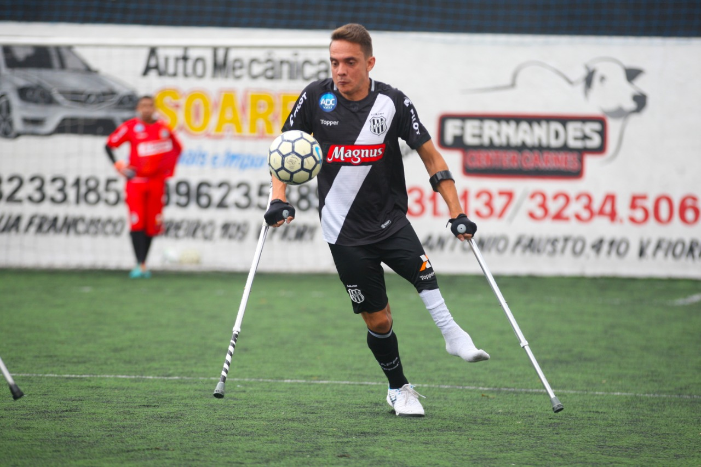
Inclusão Social
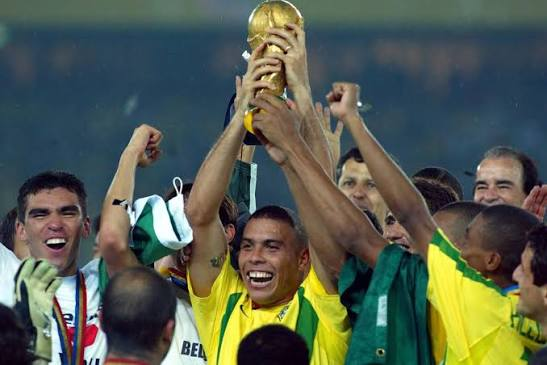
2002 Brasil se torna Pentacampeão
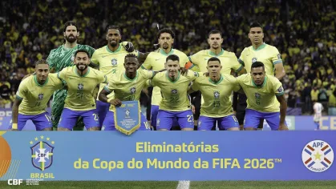
Seleção da Copa do mundo Eliminatórias de 2026
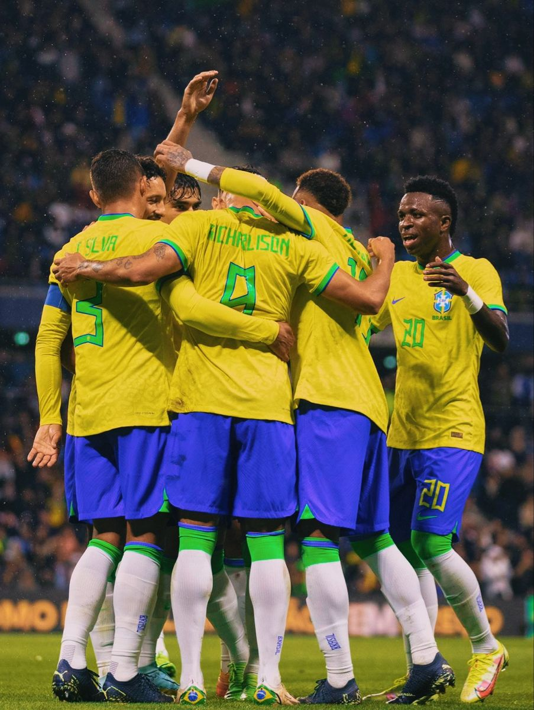
Seleção da Copa do mundo de 2022 no Qatar
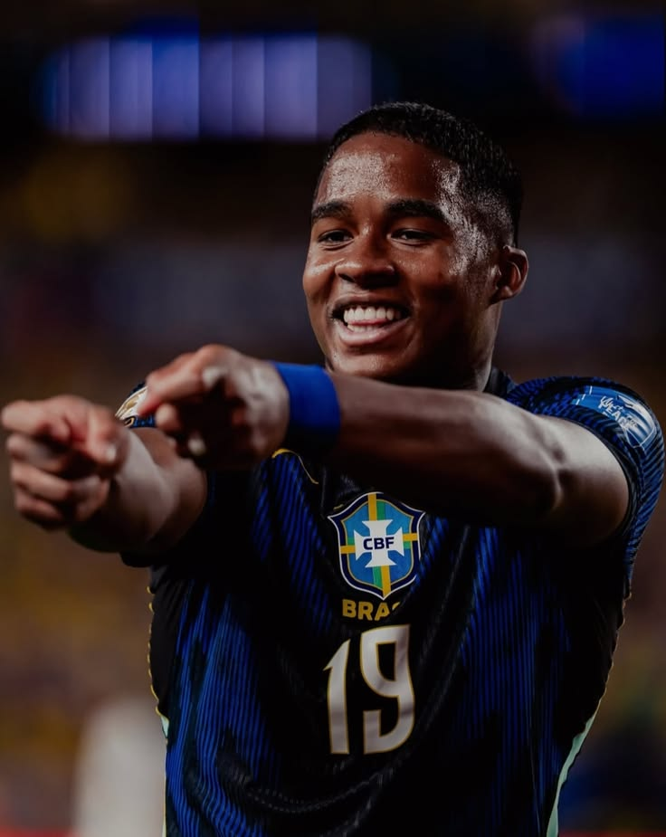
Endrick Felipe
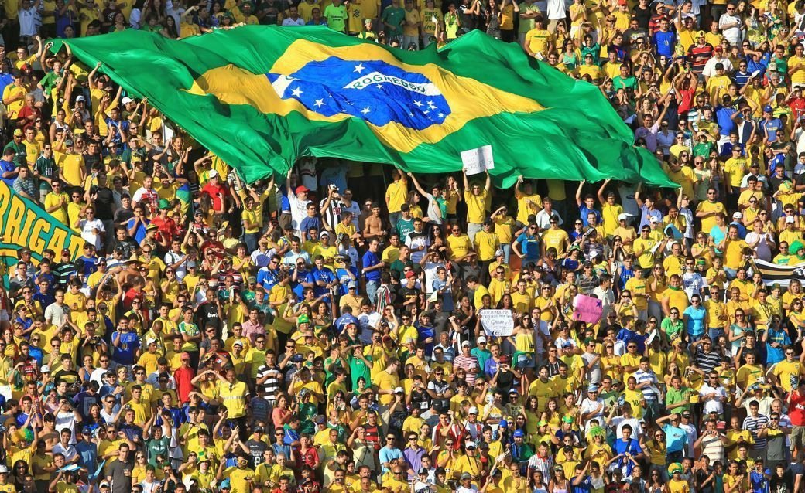
Torcida brasileira
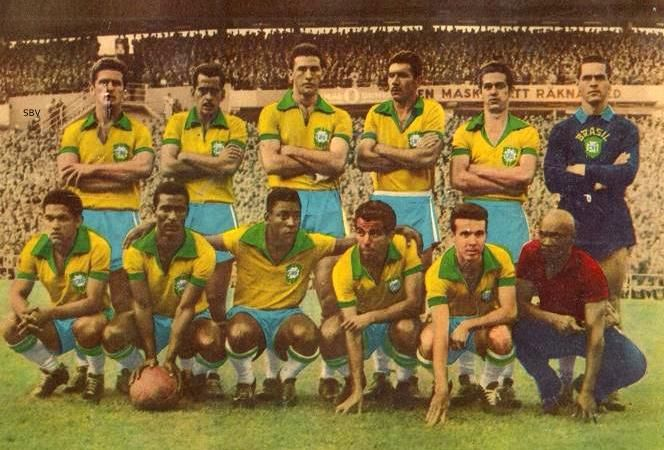
Seleção da Copa do mundo de 1958
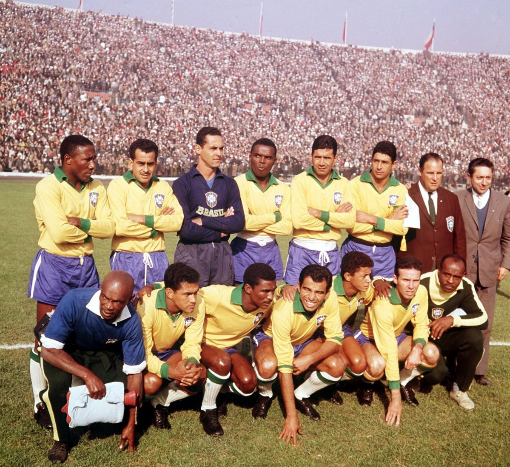
Seleção da Copa do mundo de 1962
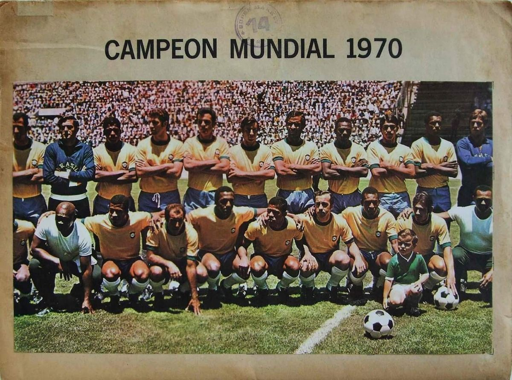
Seleção da Copa do mundo de 1970
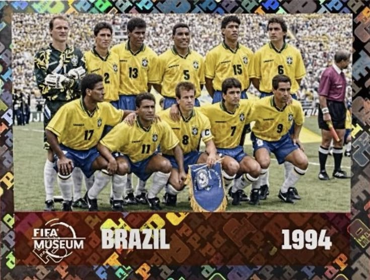
Seleção da Copa do mundo de 1958